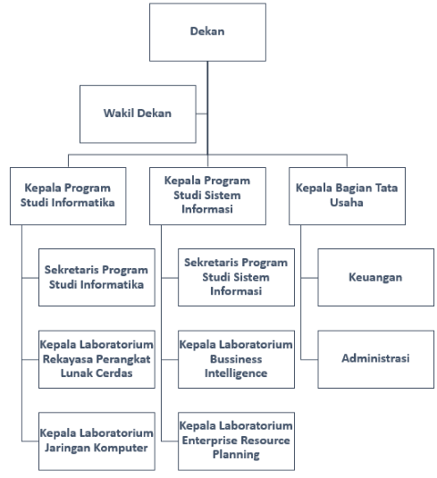

Visi & Misi
Visi
Menjadi Fakultas Teknologi Informasi yang unggul, inovatif, dan berkarakter dalam pengembangan ilmu pengetahuan dan teknologi informasi pada tingkat nasional pada tahun 2025.
Misi
- Menyelenggarakan pendidikan tinggi di bidang teknologi informasi yang berkualitas dan berkarakter
- Mengembangkan penelitian dan pengabdian masyarakat di bidang teknologi informasi yang inovatif
- Membangun jejaring kerja sama dengan institusi pendidikan, industri, dan pemerintah
- Menghasilkan lulusan yang kompeten, kreatif, dan siap berkompetisi di era digital
Sambutan Dekan
Mutaqin Akbar, S.Kom., M.T., MCE., MCF.
Assalamu’alaikum Wr. Wb. Puji syukur kehadirat Allah SWT atas segala limpahan rahmat dan karunia-NYA kita masih diberi kesempatan beramal dan berbuat kebajikan di muka bumi. Fakultas Teknologi Informasi (FTI) sebagai salah satu bagian dari Universitas Mercu Buana Yogyakarta selalu berupaya dan berpartisipasi untuk mewujudkan cita-cita “Angudi Mulyaning Bangsa”. Sebagai komitmen atas partisipasi tersebut FTI berharap untuk tetap menjadi penyelenggara pendidikan, pengajaran, penelitian dan pengabdian pada masyarakat. Website FTI ini merupakan website resmi FTI UMBY yang bertujuan untuk memberikan informasi kepada masyarakat terkait segala aktivitas terkini, organisasi, kurikulum dan proses pendukung kegiatan adakemik di FTI UMBY.
Melalui website ini diharapkan masyarakat dapat mengetahui informasi yang lebih cepat dan akurat tentang FTI UMBY. Secara khusus, bagi mahasiswa dan sivitas akademika yang lain diharapkan juga dapat mengikuti informasi terkini seputar kegiatan di FTI UMBY. Semoga webiste resmi ini dapat membantu memberikan informasi yang selengkapnya tentang FTI UMBY. Terimakasih atas perhatian dan kunjungan Anda. Wassalamu’alaikum Wr. Wb.
Pimpinan Fakultas
Dekan
Mutaqin Akbar, S.Kom., M.T., MCE., MCF.

Wakil Dekan
Irfan Pratama, S.Kom., M.Eng., MCE., MCF.

Ketua Program Studi Informatika
A. Sidiq Purnomo, S.Kom., M.Eng., MCE., MCF.

Ketua Program Studi Sistem Informasi
Putry Wahyu Setyaningsih, S.Kom., M.Kom., MTA., MCE., MCF.

Sekretaris Program Studi Informatika
Imam Suharjo, S.T., M.Eng., MCF.

Sekretaris Program Studi Sistem Informasi
Dr. Putri Taqwa Prasetyaningrum, S.T., M.T., MCE., MCF.
Struktur Organisasi

Dosen FTI
Anief Fauzan Rozi S.Kom., M.Eng., MCE., MCF.
Sistem Informasi
Putri Taqwa Prasetyaningrum Dr. S.T., M.T., MCE., MCF.
Sistem Informasi
Irfan Pratama S.Kom., M.Eng., MCE., MCF.
Sistem Informasi
Putry Wahyu Setyaningsih S.Kom., M.Kom., MTA., MCE., MCF.
Sistem Informasi
Ozzi Suria S.T., M.T.
Sistem Informasi
Nurul Tiara Kadir S.Kom., M.Eng.
Sistem Informasi
Supatman S.T., M.T.
Teknik Informatika
Indah Susilawati S.T., M.Eng.
Teknik Informatika
Imam Suharjo S.T., M.Eng., MCF.
Teknik Informatika
A. Sidiq Purnomo S.Kom., M.Eng., MCE., MCF.
Teknik Informatika
Arita Witanti S.T., M.T., MCF.
Teknik Informatika
Mutaqin Akbar S.Kom., M.T., MCE., MCF.
Teknik Informatika
Pande Nyoman Ariyuda Semadi S.Kom., M.Cs.
Teknik Informatika
Komang Sidhi Arta S.Kom., M.CS.
Teknik Informatika
Budi Sulistiyo Jati S.Kom., M.Eng.
Teknik Informatika
Dinda Eling Kartikating Sasmito S.Kom., M.Kom.
Teknik Informatika
Sapta Chandra Miarsa S.T., M.T.
Teknik Informatika